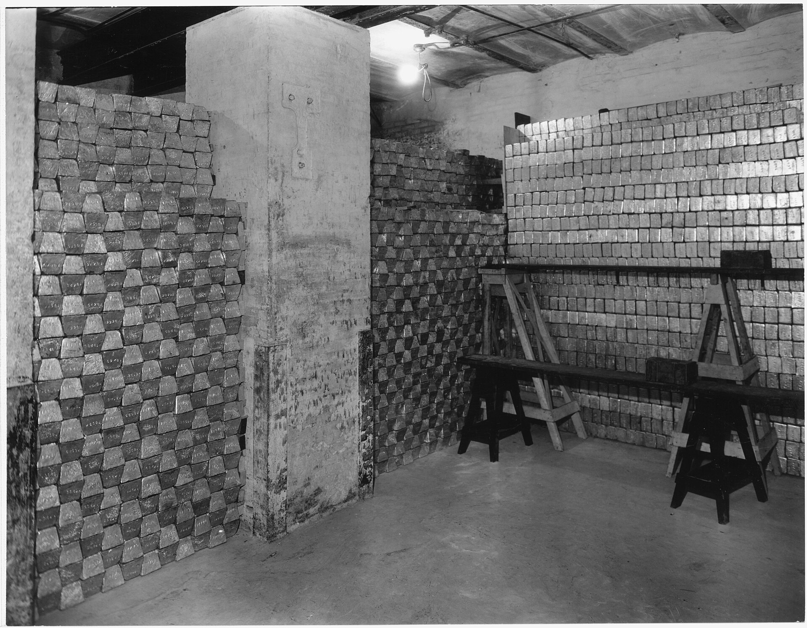
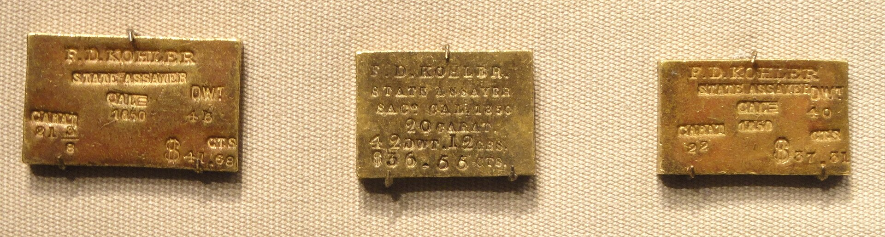

XAU/USD, next hour
Each hour a model reads gold's first 15 minutes and forecasts how wide the next 45 will range. A new reading at 15 past, 3:15–15:15 ET, Monday to Friday.
Loading the latest forecast…
inner band
outer band
How the bands held
Each forecast is scored against the market an hour after it is made.
–
Inner band held the hour's full range
–
Outer band held the hour's full range
–
Price never left the inner band
–
Price never left the outer band


Track record
Every forecast, newest first, with what gold really did in its hour. Point at an hour to see it on the ruler; open it for the model's prediction.
| Window (ET time) | Actual range | Range fit | Price inside |
|---|
- Range fit asks whether the hour's actual high–low range was no wider than the band: "inner" if it fit the inner band, "outer" if only the outer one.
- Price inside asks whether the price stayed inside the band for the whole hour.
- Both bands are centred on the last close and sized from historical percentiles (75th inner, 90th outer). They are not a confidence interval and not a direction call, so a calm move in one direction can miss "inside" while its size was forecast well.
The model
A linear regression predicts how far gold moves from 15 past the hour to its end, as a multiple of its first 15 minutes. Test MAE 0.302 on the log scale (about ×1.35 on the multiple), R² 0.627, time-series splits with no look-ahead. Trained on the 8:00 ET hour; every other hour here is an out-of-sample test.
It replaced a random forest (test MAE 0.355, R² 0.484) on 10 Nov 2026, so forecasts before that date come from the forest.
How it was built
It began as an attempt to call gold's direction, and no version held an edge out of sample. Research showed that the size of a move is far more predictable than its sign, so the model forecasts how far gold moves, never which way.
Source on GitHub